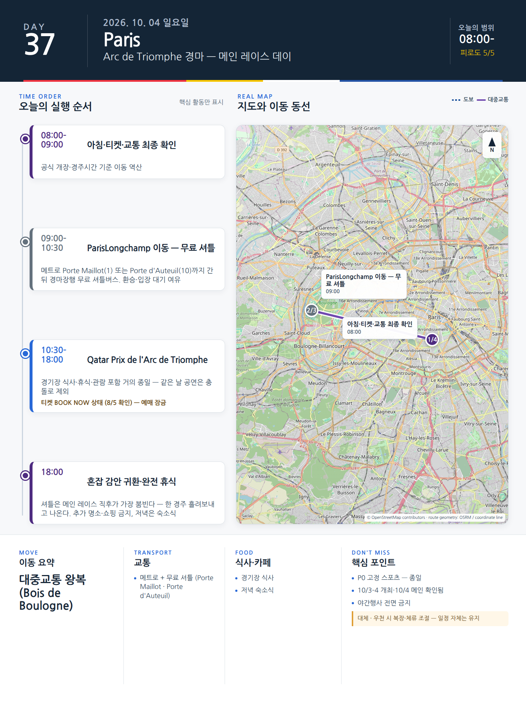

Day 37 · 10/4 일 · Paris

카드의 지도영역은 일정 순서를 보여주는 개요이며 내비게이션이 아닙니다. 실제 도보·운전 경로는 Google Maps에서 다시 계산하세요.
시간표
| 시간 | 일정 |
|---|---|
| 09:00–10:30 | 늦은 아침·가벼운 산책 |
| 10:30–12:00 | 숙소권 시장 또는 베이커리·커피 |
| 12:00–14:00 | 숙소 점심·독서·낮잠 |
| 15:00–17:00 | Jason 스케치 / Julia 카페·산책 |
| 17:00–18:30 | Canal Saint-Martin 또는 Parc Montsouris |
| 저녁 | 로티세리 치킨·샐러드·와인 등 숙소식 |
피로도
1–2/5
이 날의 메모
의도적으로 비워 둔 파리의 일요일
Canal Saint-Martin의 일요일 오후
- 설명: 관광지보다 주민들의 산책·피크닉·대화를 보여주는 생활풍경.
예약: 없음.
이 날을 지켜야 하는 이유
15박 체류가 5박 관광여행과 달라지는 지점은 ‘빈 날’이다. 전날 Versailles를 다녀왔다면 완전 휴식, 가지 않았다면 공원과 스케치만 한다. 비가 오면 숙소·카페·동네서점으로 충분하다.
오늘 확인할 것
- 핵심 실행
- 완충·무계획
- 권장 출발
- 알람 최소화
- 완충
- 완전 회복일
- 최고 리스크
- 보상심리로 일정 추가
- 우선 삭제
- 모든 선택일정
- 대체안
- 숙소·공원
- 식사·휴식
- 숙소식
- 잠금 필요
- 없음